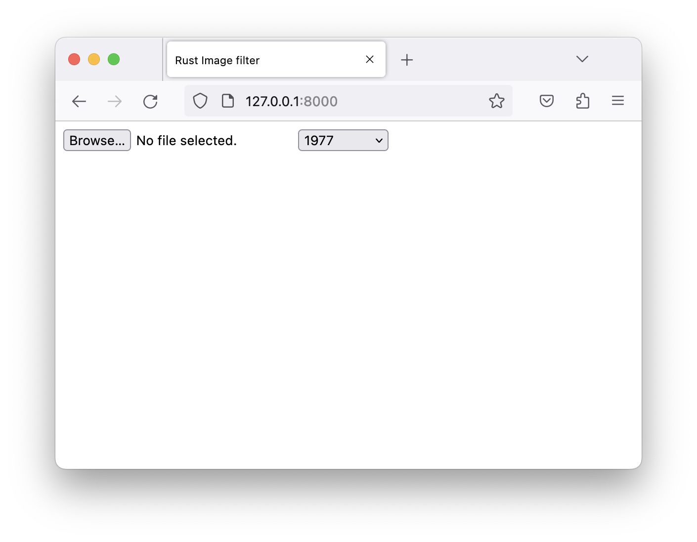

Rust & WebAssembly workshop
This workbook contains the material for a Rust & WebAssembly workshop held by Ferrous Systems and Jan-Erik Rediger.
It is split into 3 parts:
Part 1: Setup
An installation guide for all tooling used throughout this book.
Part 2: Background
A bit of common knowledge & history about WebAssembly and Rust, as well as notable use cases.
Part 3: Tutorial
A hands-on tutorial writing Rust and compiling it to WebAssembly in 3 variations: as a command-line app, as a client-side web app and as an edge computing app in the cloud.
Preparations
This chapter contains information about the course material and an installation guide.
Workshop Materials
Clone the workshop git repository:
git clone https://github.com/ferrous-systems/wasm-training-2022
The workshop repository contains all workshop materials, e.g. code examples, and the source for this workbook.
Required Software
The Setup guide helps you install the required software used throughout this book.
Setup
This section describes how to set up the toolchain for compiling Rust programs to WebAssembly and integrate them with the different environments we will look at.
The Rust Toolchain
You will need the standard Rust toolchain, including rustup, rustc, and
cargo.
Follow these instructions to install the Rust toolchain.
Rust and WebAssembly is available on Rust stable. That means we don't require any experimental feature flags. The latest Rust should work best.
WASM targets
Install the WASM targets:
rustup target add wasm32-unknown-unknown
rustup target add wasm32-wasi
Additional tooling
Some of these are optional. They make some tasks easier to handle, but it can be done without them.
wasi tooling (optional)
Subcommand for Cargo to easily build code for wasm32-wasi.
cargo install cargo-wasi
wasmtime
A fast and secure runtime for WebAssembly.
Full installation instructions: https://docs.wasmtime.dev/cli-install.html
Linux and macOS users can execute the following:
curl https://wasmtime.dev/install.sh -sSf | bash
Alternatively, on macOS with brew:
brew install wasmtime
This will download a precompiled version of wasmtime and place it in $HOME/.wasmtime,
and update your shell configuration to place the right directory in PATH.
Windows users should visit the releases page
and download the MSI installer (wasmtime-v2.0.0-x86_64-windows.msi for example)
and use that to install.
wasm-bindgen
Tool to generate JavaScript bindings for a wasm file.
cargo install wasm-bindgen-cli
wasm2wat (optional)
Translate from the binary WebAssembly format back to the text format (also known as a .wat). Part of the WebAssembly Binary Toolkit (WABT).
macOS:
brew install wabt
Others:
Download the release from the WABT release page.
Fastly CLI (optional)
fastly is an open-source command line tool for interacting with the Fastly API.
It can be used to create, build and run Compute@Edge projects locally and deploy them on Fastly.
For macOS:
brew install fastly/tap/fastly
For Windows and Linux:
Download a release from the fastly GitHub Release page.
Serving local content over HTTP
"Host These Things Please" (https) is a basic http server for serving files in a folder over HTTP locally.
Install it using cargo:
cargo install https
You can later simply use http to run it.
Tooling check
Setup check
✅ Fully restart your terminal (not just open a fresh tab).
✅ Let's check that you have installed Rust.
$ rustc --version
rustc 1.64.0 (a55dd71d5 2022-09-19)
$ cargo --version
cargo 1.64.0 (387270bc7 2022-09-16)
$ rustup target list --installed
(cut)
wasm32-unknown-unknown
wasm32-wasi
(cut)
✅ Let's check that you have installed the tools listed in the previous section (Note: not all are required).
$ wasmtime --version
wasmtime-cli 2.0.0
$ cargo wasi --version
cargo-wasi 0.1.26
Note: If you are on Windows and have a space in your username, cargo wasi will not work correctly.
$ wasm-bindgen --version
wasm-bindgen 0.2.83
$ wasm2wat --version
1.0.30
$ fastly version
Fastly CLI version v4.2.0 (a1e8772)
Built with go version go1.18.6 linux/amd64
Viceroy version: viceroy 0.3.1
What is WebAssembly?
WebAssembly is a technology that allows you to compile application code written in pretty much any language (including Rust, C, C++, JavaScript, and Go) and run it inside sandboxed environments. WebAssembly is often known as just "wasm".
WebAssembly originated as a successor to asm.js, a low-level subset of JavaScript, and Google Native Client (NaCl), a technology to run a subset of native code in a sandboxed environment within the browser.
WebAssembly itself started in 2015, with a first release of the specification in 2017. By 2019 it became an official web standard with implementations across all major browsers.
Since then it became a compilation target for a wide variety of programming languages, gained usage across the web and other execution environments and got several independent runtime implementations inside and outside of browsers
Contrary to what the name might make you believe it is not tied to the web only. But the web is where it originated.
In the next chapters you will learn what WebAssembly looks like and where it is used.
The Hello World of WebAssembly
We will work with Rust throughout this book. The first "Hello World" application is thus a small Rust function to add 2 numbers together and return the result.
#![allow(unused)] fn main() { #[no_mangle] pub extern "C" fn add(left: i32, right: i32) -> i32 { left + right } }
WebAssembly is a binary format. The above function compiled to a WebAssembly module results in the following binary blob (hexdumped).
00 61 73 6d 01 00 00 00 01 07 01 60 02 7f 7f 01
7f 03 02 01 00 05 03 01 00 10 07 10 02 06 6d 65
6d 6f 72 79 02 00 03 61 64 64 00 00 0a 09 01 07
00 20 00 20 01 6a 0b
Along with the binary format there's also the WebAssembly text format, wat.
The above module represented as wat:
(module
(type (;0;) (func (param i32 i32) (result i32)))
(func $add (type 0) (param i32 i32) (result i32)
local.get 0
local.get 1
i32.add)
(export "memory" (memory 0))
(export "add" (func $add))
)
(The wasm2wat tool transforms the binary output to its equivalent text format)
In later chapters of this book you will learn how to write, compile and run these WebAssembly modules in different environments.
Rust & Wasm
The Rust compiler gained proper asm.js support (a wasm predecessor) using Emscripten some time in 2016
and experimental WebAssembly support shortly after the same year with Rust 1.14 (the wasm32-unknown-emscripten target).
The wasm32-unknown-unknown target became available on Rust Nightly in November 2017.
wasm32-wasi was added in 2019 (initially as wasm32-unknown-wasi).
These are the two main targets you will work with.
A WebAssembly Domain Working Group was started within the Rust project in 2018. Their plan was to drive WebAssembly support in the Rust compiler forward, create tooling and libraries for Rust & WebAssembly and provide learning material.
Early on WebAssembly tooling was written in Rust,
often to simplify Rust & WebAssembly development,
but sometimes acting as general tooling as well.
Tools such as wasm-bindgen
or wasm-pack
became early examples of what great WebAssembly tooling can provide for the ecosystem.
Some WebAssembly runtimes were written in Rust, most notably wasmtime. The community started developing libraries and frameworks for WebAssembly development, e.g. Yew, a framework for making client-side single-page apps.
From the get-go Rust was a first-class citizen in the WebAssembly world, both as a language targeting WebAssembly as well as the language tools and libraries for WebAssembly were written in.
Use cases
WebAssembly originated as a successor to browser technology like asm.js and Google Native Client (NaCl). Naturally WebAssembly gained popularity across a wide range of use cases on the web.
WebAssembly on the web allows to build existing software written in a variety of languages and run them as part of ordinary web applications.
The following is a list of interesting existing web applications using WebAssembly.
Pyodide
A full Python distribution running in your browser. It comes with builtin packages as well as support to install pure-Python packages from PyPi.
An in-browser REPL is available at https://pyodide.org/en/stable/console.html.
Datasette Lite
Datasette is an open source multi-tool for exploring and publishing data. It provides an interface to SQLite databases.
Datasette Lite is based on Pyodide and brings the full application to the browser. You can open remote database and CSV files, execute queries and browse through the loaded database.
squoosh.app
squoosh is an image compression web app, fully client-side. It provides an interactive interface to resize an image and supports different output codecs. Everything is happening client-side and images never leave the browser.
Source code is available on GitHub.
Photoshop on the Web
Photoshop on the Web is the nearly-complete Photoshop experience running in the browser. It's currently in beta and not yet fully supported in all browsers.
Tailscale SSH Console
Tailscale is a VPN service that allows you to make your devices accessible within an overlay network, no matter where those devices are physically located. It recently started to support SSH over their service with next to no setup. They now offer an SSH console directly in the browser. Their VPN client and networking code has been compiled to WebAssembly and (encrypted) traffic goes directly to relay servers, but not through additional proxies.
WASM & JavaScript
WebAssembly is available to every website now through the JavaScript web API. It is supported in all recent versions of all major browsers1.
The WebAssembly web API is available on the WebAssembly JavaScript object.
The available API allows to compile and instantiate WebAssembly modules,
access exported functionality and access the shared memory block
used to share data between the WebAssembly module and the JavaScript environment.
The web tutorial chapter will guide you through some of the usage later.
See caniuse.com.
Use cases everywhere else
WebAssembly is also supported outside of the browser environment. There it can be used for a wide variety of applications, making use of its sandboxing and security functionality.
Some possible use cases include:
Plugins
User-facing native applications can safely support user-contributed plugins. These plugins are compiled to WebAssembly modules and the application can run them in a restricted environment within the application, allowing access to only a small part of the application.
Serverless
"Serverless" can describe a wide variety of concepts. In recent times it became known as a cloud computing execution model, where cloud providers allocate machine resources on demand, managing it for their users and executing the user's application code on request.
Most commonly this is offered as a Function as a Service (FaaS) platform, where small application logic is executed on incoming requests, using limited resources (CPU, time, memory).
WebAssembly allows that users can write this logic in a language of their choice and the provider supports a general WebAssembly execution environment, often accompanied with a provider-specific SDK. The provider can leverage the WebAssembly sandbox mechanism to provide per-request isolation & performance.
We look at one of these serverless offerings: Fastly's Compute@Edge.
Docker
Docker recently announced a Technical Preview of their WebAssembly support. Docker containers can be used to build and distribute WebAssembly applications. The Docker engine can then extract and run this WebAssembly application in a wasm runtime, all while using the familiar Docker tooling.
Third-party library sandboxing
RLBox is a toolkit for sandboxing third party C libraries. This allows to run third-party libraries within an existing application, but restricting the access to only what is directly provided to the library as input, thus reducing the attack surface of this part of the code. It is in use in Mozilla Firefox.
WASI
The WebAssembly specification describes a very limited interface that the environment a WebAssembly module runs in need to provide. It essentially has 3 important parts:
- Imports. Functionality provided by the environment for use within the WebAssembly code.
- Exports. The functions the WebAssembly module exports, making them callable from the outside.
- Linear Memory. The WebAssembly module has access to a block of linear memory, which it potentially can expand on request. This memory can be read by the host environment as well.
Therefore WebAssembly code is limited to self-contained computation, calls to imported functions and reading and writing from memory. No default imports are provided and how data is laid out in the linear memory is also unspecified.
And this is where WASI comes in:
WASI is a modular system interface for WebAssembly. As described in the initial announcement, it’s focused on security and portability.
(via wasi.dev)
WASI is a specification of the interfaces a program can use to communicate with the host environment. It is up to the host environment how these interfaces are implemented and if additional security mechanisms are enforced.
Rust supports the wasm32-wasi target and the Rust standard library is implemented for this target,
allowing for most Rust programs and libraries to just work with this target.
The WebAssembly runtime wasmtime implements the required WASI interfaces in a capability-based security model
The initial announcement for WASI has a lot more details on how it works.
Fastly's Compute@Edge
Fastly is a cloud computing provider and content delivery network (CDN).
Earlier this year they released their Compute@Edge platform. This platform allows to run WebAssembly code at the Fastly edge. They chose WebAssembly for exactly the reasons we listed in the previous chapter: lightweight sandboxing, per-request isolation and performance.
They released a Rust SDK (fastly),
which provides the necessary integration to read an incoming request and generate an appropriate response.
The host runtime uses WASI to provide the necessary system interfaces.
This means that you can write normal Rust code, using most of the Rust standard library and a large number of available Rust crates without issues.
They also support JavaScript and Go as languages on this platform.
You can find the Fastly Compute@Edge documentation at https://docs.fastly.com/products/compute-at-edge.
You will learn how to write a small application for this platform in the Edge computing tutorial later in this book.
Idea
We now want to build a slightly more complex application.
The idea is to use an existing image manipulation library to apply filters to a given image1. This example will show us how to use an existing Rust crate, how to handle input and output and how to interact with the different environments.
We start off with building a command-line tool run using wasmtime,
then build a web application running completely client-side,
and last as an edge computing API that processes images posted to it.
We will work with the following example image (but really any image will work). Right-click it and save it to disk for later use.
When applying the filter named "1977", this is the result:

Several more filters are available in the library.
The image filters are inspired by Instagram. The implementation is based on CSSgram, which was ported to Rust by @ha-shine. The example image was taken on 2022-10-28 by Jan-Erik Rediger.
Command-line interface
In this tutorial you'll get familiar with:
- Building Rust code for the
wasm32-wasitarget - Running applications on the command-line using
wasmtime - Re-using existing crates in a WASM application
wasmtime's capability-based system
We start with a command-line tool that takes an image and a filter name as input.
It applies the given filter to the image and produces an output.png.
Hello World on the command line
✅ Create a new Rust project
cargo new rustagram
cd rustagram
✅ To start the tool will only print a message. Open src/main.rs and add
fn main() { println!("Hello World from wasmtime!"); }
Next, read how to build and run the application.
Building and running with wasmtime
✅ You can build for the wasm32-wasi manually like this:
cargo build --target wasm32-wasi
This should create a file target/wasm32-wasi/debug/rustagram.wasm.
✅ Alternatively, if you installed cargo-wasi (see Setup) you can build the application using cargo wasi:
cargo wasi build
cargo-wasi handles additional tooling.
For example it calls wasm-opt on the resulting file to further reduce the file size.
Note: If you are on Windows and have a space in your username, cargo wasi will not work correctly. Stick to cargo build --target wasm32-wasi.
✅ Now that the application is built you can run it using wasmtime:
wasmtime target/wasm32-wasi/debug/rustagram.wasm
You should see the message printed:
$ wasmtime target/wasm32-wasi/debug/rustagram.wasm
Hello World from wasmtime!
✅ cargo-wasi is able to run the application for you:
cargo wasi run
Under the hood it just calls out to wasmtime as you did above.
However it can't handle additional arguments, so you will need to run wasmtime manually later.
✅ (Optional) You can transform the generated WebAssembly code into its text representation using wasm2wat
wasm2wat target/wasm32-wasi/debug/rustagram.wasm
Caution: this produces a lot of output.
You should see something like this:
(module
(type (;0;) (func))
(type (;1;) (func (result i32)))
(type (;2;) (func (param i32)))
...
Try to identify your "Hello World" code.
Image filter application
Now that you can build and run an application compiled to WebAssembly, it's time to build some functionality into it.
The goal is:
- Take an input file, a filter name and, optionally, an output file (or "output.jpg" as the default).
- Load the input file, apply the given filter to this image, then write the resulting image to the output file.
You can continue with the previously created project.
✅ Open src/main.rs again and replace the println! line with code to parse the arguments.
fn main() { let mut args = std::env::args().skip(1); let input = args.next().expect("INPUT required"); let filter = args.next().expect("FILTER required"); let output = args.next().unwrap_or_else(|| "output.jpg".to_string()); dbg!((input, filter, output)); }
✅ Build and run this to make sure it works as expected.
✅ Now add a dependency to handle image manipulation. The image filters are readily available in the rustagram2 crate.
Add the rustagram2 crate as a dependency in rustagram/Cargo.toml
[dependencies]
rustagram2 = "2.0.0"
The documentation is available on docs.rs/rustagram2.
✅ You need a FilterType to apply later.
rustagram2 shows the available filters in the FilterType documentation.
It also has FromStr from the standard library implemented for it, so you can parse strings into the filter type by calling parse() on the string.
#![allow(unused)] fn main() { let filter_type = filter.parse().expect("can't parse filter name"); }
An unknown filter name would cause an error. For now you don't need to handle that. Your application can just panic and exit.
If you compile everything at this point you will probably hit a type annotation error. You can try to resolve that now. You can also continue and observe how this error will be resolved once you add more code in the next steps.
Now comes the main part of the application: load the image, apply the filter and save the resulting file. This is a small challenge for you to write, but the next steps guide you through it.
✅ You need to read the file from disk and turn it into an object you can work with.
image::open does that for you easily.
Don't worry about error handling and just unwrap.
✅ The image type you get is able to represent a wide variety of image types.
For this tutorial you want an RgbaImage. You can convert your image using the to_rgba8 method.
✅ Last but not least you need to apply the selected filter on this image.
The rustagram2 crate implements that as the apply_filter method on a trait.
This trait is automatically implemented for the RgbaImage type you got from to_rgba8.
With the help of the documentation this should be achievable in a couple of lines of code.
Try it for yourself!
✅ Once you wrote the code, build it again and try to run it.
Expected output when you don't pass any arguments:
$ wasmtime target/wasm32-wasi/debug/rustagram.wasm
thread 'main' panicked at 'INPUT required', src/main.rs:7:29
note: run with `RUST_BACKTRACE=1` environment variable to display a backtrace
Error: failed to run main module `target/wasm32-wasi/debug/rustagram.wasm`
Caused by:
0: failed to invoke command default
[...]
Expected output when you pass a file path and a filter name:
$ wasmtime target/wasm32-wasi/debug/rustagram.wasm kongelige-slott.jpg 1977
thread 'main' panicked at 'called `Result::unwrap()` on an `Err` value: IoError(Custom { kind: Uncategorized, error: "failed to find a pre-opened file descriptor through which \"kongelige-slott.jpg\" could be opened" })', src/main.rs:12:34
note: run with `RUST_BACKTRACE=1` environment variable to display a backtrace
Error: failed to run main module `target/wasm32-wasi/debug/rustagram.wasm`
Caused by:
0: failed to invoke command default
[...]
What did just happen?
wasmtime ran your code up until it tried to read the image from disk.
By default wasmtime blocks all filesystem access.
You need to explicitly give permission to specific directories in order to be able to read and writes files within.
$ wasmtime --dir . target/wasm32-wasi/debug/rustagram.wasm kongelige-slott.jpg 1977
$
This should now have created output.jpg.
Final application
You should have this file tree layout:
$ tree
.
├── Cargo.lock
├── Cargo.toml
└── src
└── main.rs
To recap your final code should look something like this:
use rustagram::{image, RustagramFilter}; fn main() { let mut args = std::env::args().skip(1); let input = args.next().expect("INPUT required"); let filter = args.next().expect("FILTER required"); let output = args.next().unwrap_or_else(|| "output.jpg".to_string()); let filter_type = filter.parse().expect("can't parse filter name"); let img = image::open(input).unwrap(); let out = img.to_rgba8().apply_filter(filter_type); out.save(output).unwrap(); }
You can build your code like this:
cargo build --target wasm32-wasi
And run it with wasmtime:
wasmtime --dir . target/wasm32-wasi/debug/rustagram.wasm skyline.jpg 1977
Some ideas on what to do next:
- Run the application natively:
cargo run. Any complications or differences? - Inspect the built wasm module using
wasm2wat. Can you spot the parts of the code that you've written? Can you find the names of all available filters? - Try some other crate you know. Does it work as-is on WebAssembly/with Wasi?
Web
In this tutorial you'll get familiar with:
- Building Rust code for the
wasm32-unknown-unknowntarget - Interacting with a WASM application from JavaScript
- The
wasm-bindgentool to handle more complex types passed over the boundary
Next we build a web application that processes images client-side in the browser. No server processing involved.
We re-use the same Rust crate to apply the image filter, but this time load the image directly from a binary blob. That binary blob is passed in from the JavaScript side.
Hello World on the web
You already saw the "Hello World of WebAssembly" earlier. You will now run this on the web without additional tools.
✅ Create a new crate
#![allow(unused)] fn main() { cargo new --lib hello-world cd hello-world }
✅ Set the crate type to cdylib in Cargo.toml
[lib]
crate-type = ["cdylib"]
✅ Write the add function.
#![allow(unused)] fn main() { #[no_mangle] pub extern "C" fn add(left: i32, right: i32) -> i32 { left + right } }
The no_mangle attribute ensures that the function name lands in the binary as is,
otherwise you couldn't later call it by name.
extern "C" ensures it uses the C-compatible ABI, and thus what WebAssembly (and JavaScript) expects.
✅ Compile it to WebAssembly.
cargo build --target wasm32-unknown-unknown
This will create target/wasm32-unknown-unknown/debug/hello_world.wasm.
✅ Next create an HTML file index.html
<!DOCTYPE html>
<html lang="en">
<head>
<meta charset="utf-8">
<title>Rust WASM Demo</title>
</head>
<body>
<script>
<!-- to be filled in -->
</script>
</body>
</html>
✅ Now you need to load, compile and instantiate the WebAssembly module.
All of this is part of the web API.
fetch can load data from URLs,
WebAssembly.instantiate() compiles and instantiates the WebAssembly module.
fetch('target/wasm32-unknown-unknown/debug/hello_world.wasm')
.then((response) => response.arrayBuffer())
.then((bytes) => WebAssembly.instantiate(bytes, {}))
The result of this is an instance that has accessors for the exported functions of the module.
✅ Call the add method on the Wasm module instance.
.then((result) => {
const sum = result.instance.exports.add(1, 2);
console.log(`1 + 2 = ${sum}`);
});
✅ Serve your HTML file and the WebAssembly over HTTP.
http
Open http://localhost:8000 in your web browser and open the Developer Tools. In the console you should now see the result:
1 + 2 = 3
Short introduction to wasm-bindgen
WebAssembly is limited to basic integer and float types, but does not itself support rich types like strings, objects, enums or closures. However an instantiated WebAssembly module has access to memory where it can place more data. This block of memory is also accessible by the host side, e.g. the JavaScript environment of a website. Both sides, the WebAssembly code and the host side, need to agree what bytes in that memory block mean in order to work with them.
wasm-bindgen is a tool that can generate the necessary code on both sides
to handle more rich types.
It supports a variety of Rust types, including String, Vec, Result and slices,
and allows to export Rust types for use in JavaScript (see wasm-bindgen's Supported Rust types).
How to use
The wasm-bindgen CLI utility works on the compiled .wasm file.
It supports several different output targets.
For this tutorial we focus only on JavaScript and the web target.
wasm-bindgen path/to/module.wasm --out-dir app --target web --no-typescript
#[wasm_bindgen(start)]
This annotation should be put on a public function.
That function essentially becomes your start function,
which gets automatically called when you instantiate the WebAssembly module.
You would for example use this to set up a panic handler and logging.
#[wasm_bindgen(start)] pub fn main() { panic::set_hook(Box::new(console_error_panic_hook::hook)); console_log::init_with_level(log::Level::Debug).unwrap(); }
#[wasm_bindgen] on a function
If used without additional attributes this wraps the annotated function
to be exported.
You can use the supported Rust types and wasm-bindgen will ensure the conversion happens on either side.
#![allow(unused)] fn main() { #[wasm_bindgen] pub fn say_hello(name: String) -> String { format!("Hello, {}", name) } }
#[wasm_bindgen] on a struct
Annotating a Rust struct makes that struct available on the JavaScript side as an object.
#![allow(unused)] fn main() { #[wasm_bindgen] struct Country { string shortcode; } }
Methods of that struct need to be annotated to be available in JavaScript, too.
#![allow(unused)] fn main() { impl Country { #[wasm_bindgen(constructor)] pub fn new() -> Country { Country { shortcode: "NO".to_string() } } #[wasm_bindgen(getter)] pub fn shortcode(&self) -> String { self.shortcode.clone() } } }
The tutorial won't use this, but feel free to play around.
See On Rust exports in the wasm-bindgen documentation for more.
In the next chapter you will start building the image filter application for the web,
using wasm-bindgen to help with the rich types.
Basic setup
✅ Create a new Rust project.
cargo new --lib image-filter
cd image-filter
✅ Set the crate type to cdylib in Cargo.toml
[lib]
crate-type = ["cdylib"]
✅ To simplify the build later on you can use make to build the Rust crate and call wasm-bindgen to generate the JavaScript shim. Create a Makefile and add this:
.PHONY: build
build:
cargo build --release --target=wasm32-unknown-unknown
wasm-bindgen target/wasm32-unknown-unknown/release/image_filter.wasm \
--out-dir app \
--target web \
--no-typescript
You can also use a shell script to do the same or simply run these commands manually.
✅ Add wasm-bindgen and rustagram2 depenencies to Cargo.toml:
`
[dependencies]
rustagram2 = "2"
wasm-bindgen = "0.2.83"
✅ To help with debugging and logging add these 3 dependencies to Cargo.toml
[dependencies]
console_error_panic_hook = "0.1.7"
console_log = "0.2.0"
log = "0.4.17"
console_error_panic_hook ensures that you get Rust's panic message & stack trace in your browser's console.
console_log ensures you can use Rust's log crate for logging as you are used to.
✅ It's time to set up the above mentioned crates in the module's start function.
Annotate your main function with wasm_bindgen(start).
use std::panic; use wasm_bindgen::prelude::*; #[wasm_bindgen(start)] pub fn main() { panic::set_hook(Box::new(console_error_panic_hook::hook)); console_log::init_with_level(log::Level::Debug).unwrap(); }
Note: The name of this function actually doesn't matter.
The annotation is what tells wasm-bindgen that this becomes the setup function.
✅ You should now be able to compile the Rust code to WebAssembly and use wasm-bindgen to generate the JavaScript shim.
If you are using the Makefile as above you can now run
make
Otherwise run the commands directly:
cargo build --release --target=wasm32-unknown-unknown
wasm-bindgen target/wasm32-unknown-unknown/release/image_filter.wasm --out-dir app --target web --no-typescript
You should find 2 new files in the app directory:
image_filter.js and image_filter_bg.wasm.
In the next chapter you will write the few Rust pieces necessary for the image filter application. After that you build the web frontend to load and run the WebAssembly module.
Image filter application
With the basic setup for the Rust code done you can now write a function that applies the image filter to a given image.
✅ Start by importing the necessary modules and structs from the rustagram2 crate and the standard library in your src/lib.rs.
#![allow(unused)] fn main() { use rustagram::image::io::Reader; use rustagram::image::ImageOutputFormat; use rustagram::RustagramFilter; }
✅ Next create a new function. It will get a slice of bytes representing the image and a filter name as a string.
It should return a Vec<u8>, a vector of bytes representing the modified image in PNG format.
#![allow(unused)] fn main() { pub fn apply_filter(img: &[u8], filter: &str) -> Vec<u8> { log::debug!("image: {} bytes, filter: {:?}", img.len(), filter); // (to be filled in) } }
The code from the next steps will go in this function.
✅ You previously set up logging, use that and log something to ensure you get the data that you expect.
#![allow(unused)] fn main() { log::debug!("image: {} bytes, filter: {:?}", img.len(), filter); }
✅ The image data needs to be read from the buffer.
The application allows multiple file formats, luckily the image format can guess the format and then decode it.
The documentation for the Reader type goes into some detail.
#![allow(unused)] fn main() { let img = Reader::new(Cursor::new(img)) .with_guessed_format() .unwrap() .decode() .unwrap(); }
For now just unwrap on errors.
As you have set up the panic handler you should see it in the browser's console if you hit an error.
✅ As you have done in the CLI application parse the filter name into a FilterType.
#![allow(unused)] fn main() { let out = img.to_rgba8().apply_filter(filter_type); }
Again if you compile everything at this point you will probably hit a type annotation error. That is expected and you can observe how this changes as you fill in the rest of the code in the next steps.
✅ You now have everything you need to apply the filter to the decoded image. This is exactly the same as in the previous tutorial.
#![allow(unused)] fn main() { let out = img.to_rgba8().apply_filter(filter_type); }
✅ But now instead of saving that changed image to a file you should store it in a buffer and return that buffer.
ImageBuffer#write_to does just that.
Don't forget to specify its format as PNG.
#![allow(unused)] fn main() { let mut bytes: Vec<u8> = Vec::new(); out.write_to(&mut Cursor::new(&mut bytes), ImageOutputFormat::Png) .unwrap(); bytes }
And that is already all the code you need to be able to apply an image filter to a passed in image.
✅ Again build all code and run wasm-bindgen to generate the JavaScript shim.
If you are using the Makefile as above you can now run
make
Otherwise run the commands directly:
cargo build --release --target=wasm32-unknown-unknown
wasm-bindgen target/wasm32-unknown-unknown/release/image_filter.wasm --out-dir app --target web --no-typescript
The JavaScript shim (image_filter.js) and the wasm file (image_filter_bg.wasm) in your app directory should be updated.
In the next chapter you will work on the other side of this application: First the HTML frontend and then the necessary JavaScript code to load and run the WebAssembly module.
HTML Frontend
Your image filter application needs some basic UI to allow a user to specify an image on disk and select the image filter to be applied.
✅ Start with a new file app/index.html with a basic HTML structure.
<!DOCTYPE html>
<html lang="en">
<head>
<meta charset="utf-8">
<title>Rust Image filter</title>
</head>
<body>
</body>
</html>
✅ To upload a picture the frontend needs a file selector, so add the following in between the <body> tags.
<input type="file" id="files" name="file" accept="image/png, image/jpeg" />
The accept attribute limits what files a user can select.
As this application is for images it's enough to limit it to PNG and JPEG files for now.
✅ Additionally the user should be able to select a filter. List out all available ones manually.
<select name="filter">
<option value="None">none</option>
<option value="1977" selected>1977</option>
<option value="Aden">Aden</option>
<option value="Brannan">Brannan</option>
<option value="Brooklyn">Brooklyn</option>
<option value="Clarendon">Clarendon</option>
<option value="Earlybird">Earlybird</option>
<option value="Gingham">Gingham</option>
<option value="Hudson">Hudson</option>
<option value="Inkwell">Inkwell</option>
<option value="Kelvin">Kelvin</option>
<option value="Lark">Lark</option>
<option value="Lofi">Lofi</option>
<option value="Maven">Maven</option>
<option value="Mayfair">Mayfair</option>
<option value="Moon">Moon</option>
<option value="Nashville">Nashville</option>
<option value="Reyes">Reyes</option>
<option value="Rise">Rise</option>
<option value="Slumber">Slumber</option>
<option value="Stinson">Stinson</option>
<option value="Toaster">Toaster</option>
<option value="Valencia">Valencia</option>
<option value="Walden">Walden</option>
</select>
In case of None no filter should be applied and the user should see the image they selected unchanged.
✅ To show that an upload is in progress add a <span> where you can show a message.
<span></span>
✅ You also need a place to display the resulting image.
<img />
✅ And last but not least include the JavaScript frontend code.
<script type="module" src="app.js"></script>
The JavaScript file does not exist yet. You will create that in the next chapter.
✅ To ensure everything is working as expected for now serve the files over HTTP using http
cd app
http
Your application should be reachable at http://127.0.0.1:8000/. It should look something like this:

In the next chapter you will finally write the JavaScript code to load and run the WebAssembly module.
JavaScript
JavaScript is used to handle events from the HTML form and pass the data over to the WebAssembly module, which first needs to be loaded and instantiated of course.
✅ Start by creating an empty app/app.js file.
This is where all the code will go now.
✅ You already have the JavaScript shim and the wasm file ready to go, so you can start by importing it.
import init, { apply_filter } from './image_filter.js';
✅ You need to call and await init to actually load, compile and instantiate the WebAssembly module.
Once you have done that imported apply_filter will be a function you can call.
await init();
✅ Whenever the user selects an image or changes the filter you should load the image and apply the filter. Hook up the onchange events of both the file input and the select now.
document.querySelector('input[type=file]').onchange = (evt) => {
imageFilter();
};
document.querySelector('select').onchange = (evt) => {
imageFilter();
};
imageFilter will be the function that handles all the logic.
✅ But first add a small helper typedArrayToURL.
JavaScript's TypedArray is an array-like view of a binary data buffer.
Your converted image will be in such a buffer.
To display that in the browser you need to turn it into an object url.
It's enough to only handle the PNG image format.
function typedArrayToURL(typedArray) {
return URL.createObjectURL(
new Blob([typedArray.buffer], { type: "image/png" })
);
}
✅ Now start writing your imageFilter function.
function imageFilter() {
// (to be filled in)
}
✅ You should start by checking for the file the user selected.
var files = document.getElementById('files').files;
if (!files.length) {
return;
}
var file = files[0];
✅ This is a good time to let the user now that the application is working. You can also display the original image without a filter applied yet.
var span = document.querySelector('span');
span.innerText = "working...";
var el = document.querySelector('img');
el.src = URL.createObjectURL(file);
el.width = "500";
✅ Next fetch the selected image filter name. If it's "none" you don't need to do any work!
var filter = document.querySelector("select").value.toLowerCase();
if (filter == "none") {
span.innerText = "done.";
return;
}
✅ Reading the file to then pass it to your WebAssembly function requires some additional web APIs.
A FileReader
allows to read the selected file.
var reader = new FileReader();
reader.onload = function(readerEvt) {
var img = readerEvt.target.result;
// (to be filled in)
};
reader.readAsArrayBuffer(file);
✅ The apply_filter function expects an array of u8 and the filter name as a string.
To get that array from our img you can call new Uint8Array, passing your image data.
A string is automatically handled by the wasm-bindgen shim.
let result = apply_filter(new Uint8Array(img), filter);
And that is all you need to call a function in the WebAssembly module already.
✅ What's left to do is turn the image into a blob URL you can display and inform the user that the work is done.
let blobUrl = typedArrayToURL(result);
let el = document.querySelector('img');
el.src = blobUrl;
el.width = "500";
var span = document.querySelector('span');
span.innerText = "done.";
The next chapter will tell you again how to build and run the application locally.
Running it locally
✅ First build your Rust code to WebAssembly and run wasm-bindgen to generate the JavaScript shim.
If you are using the Makefile you can now run:
make
Otherwise run the commands directly:
cargo build --release --target=wasm32-unknown-unknown
wasm-bindgen target/wasm32-unknown-unknown/release/image_filter.wasm --out-dir app --target web --no-typescript
You should find 2 additional files in the app directory:
image_filter.js and image_filter_bg.wasm.
✅ Serve your application locally using http:
cd app
http
Your application should be reachable at http://127.0.0.1:8000/.
Play around with it, upload an image and change filters.
Final application
You should have this file tree layout:
$ tree
.
├── Cargo.lock
├── Cargo.toml
├── Makefile
├── app
│ ├── app.js
│ ├── image_filter.js <-- generated file
│ ├── image_filter_bg.wasm <-- generated file
│ └── index.html
└── src
└── lib.rs
To recap your final Rust code should look something like this:
use std::io::Cursor; use std::panic; use wasm_bindgen::prelude::*; use rustagram::image::io::Reader; use rustagram::image::ImageOutputFormat; use rustagram::RustagramFilter; #[wasm_bindgen(start)] pub fn main() { panic::set_hook(Box::new(console_error_panic_hook::hook)); console_log::init_with_level(log::Level::Debug).unwrap(); } #[wasm_bindgen] pub fn apply_filter(img: &[u8], filter: &str) -> Vec<u8> { log::debug!("image: {} bytes, filter: {:?}", img.len(), filter); let img = Reader::new(Cursor::new(img)) .with_guessed_format() .unwrap() .decode() .unwrap(); let filter_type = filter.parse().unwrap(); let out = img.to_rgba8().apply_filter(filter_type); let mut bytes: Vec<u8> = Vec::new(); out.write_to(&mut Cursor::new(&mut bytes), ImageOutputFormat::Png) .unwrap(); bytes }
The frontend in HTML:
<!DOCTYPE html>
<html lang="en">
<head>
<meta charset="utf-8">
<title>Rust Image filter</title>
</head>
<body>
<input type="file" id="files" name="file" accept="image/png, image/jpeg" />
<select name="filter">
<option value="None">none</option>
<option value="1977" selected>1977</option>
<option value="Aden">Aden</option>
<option value="Brannan">Brannan</option>
<option value="Brooklyn">Brooklyn</option>
<option value="Clarendon">Clarendon</option>
<option value="Earlybird">Earlybird</option>
<option value="Gingham">Gingham</option>
<option value="Hudson">Hudson</option>
<option value="Inkwell">Inkwell</option>
<option value="Kelvin">Kelvin</option>
<option value="Lark">Lark</option>
<option value="Lofi">Lofi</option>
<option value="Maven">Maven</option>
<option value="Mayfair">Mayfair</option>
<option value="Moon">Moon</option>
<option value="Nashville">Nashville</option>
<option value="Reyes">Reyes</option>
<option value="Rise">Rise</option>
<option value="Slumber">Slumber</option>
<option value="Stinson">Stinson</option>
<option value="Toaster">Toaster</option>
<option value="Valencia">Valencia</option>
<option value="Walden">Walden</option>
</select>
<span></span>
<br>
<img />
<script type="module" src="app.js"></script>
</body>
</html>
The JavaScript frontend code:
import init, { apply_filter } from './image_filter.js';
await init();
document.querySelector('input[type=file]').onchange = (evt) => {
imageFilter();
};
document.querySelector('select').onchange = (evt) => {
imageFilter();
};
function typedArrayToURL(typedArray) {
return URL.createObjectURL(
new Blob([typedArray.buffer], { type: "image/png" })
);
}
function imageFilter() {
var files = document.getElementById('files').files;
if (!files.length) {
return;
}
var file = files[0];
var span = document.querySelector('span');
span.innerText = "working...";
var el = document.querySelector('img');
el.src = URL.createObjectURL(file);
el.width = "500";
var filter = document.querySelector("select").value.toLowerCase();
if (filter == "none") {
span.innerText = "done.";
return;
}
var reader = new FileReader();
reader.onload = function(readerEvt) {
var img = readerEvt.target.result;
let result = apply_filter(new Uint8Array(img), filter);
let blobUrl = typedArrayToURL(result);
let el = document.querySelector('img');
el.src = blobUrl;
el.width = "500";
var span = document.querySelector('span');
span.innerText = "done.";
};
reader.readAsArrayBuffer(file);
}
A demo deployment is available at:
https://tmp.fnordig.de/wasm/image-filter/
Some ideas on what to do next:
- The code
unwraps a lot. Introduce some error handling. Can you return an error from your wasm module?
Edge
In this tutorial you'll get familiar with:
- Building Rust code for Fastly's Compute@Edge platform
- Handling and responding to a web request
- A little bit of HTML and JavaScript for the frontend
We build a web API that applies a given filter to an image posted to it. It returns the produced image over HTTP. Additionally we also serve a bare-bones HTML form that allows us to use this API.
Application specification
Our image filter application provides 3 endpoints:
GET /
The HTML frontend to load, post and display images.
GET /app.js
The JavaScript frontend code to handle the logic of sending and displaying the image.
POST /image
The actual image filter API. It receives the image in the request body and returns the converted image.
In the next chapters we go through creating this project step by step.
New compute project
Initialize a new package locally using fastly
No Fastly account required for local development. For the manual way see below.
✅ Create a new compute project from a starter kit.
$ mkdir edge-image-filter
$ cd edge-image-filter
$ fastly compute init
Give it a name of your choice.
When asked for the language to use select "Rust".
When asked for the Starter kit, use "[5] Empty starter for Rust".
✅ Finally run the project locally
fastly compute serve
Your application should be reachable at http://127.0.0.1:7676/.
Initialize a new package locally.
The fastly CLI handles creation of a new package.
It essentially does the below steps.
✅ Create a new project using cargo
cargo new edge-image-filter
cd edge-image-filter
✅ Add the fastly dependency
cargo add fastly
Alternatively add it to your Cargo.toml under [dependencies]:
fastly = "0.8.6"
✅ Add the scaffolding to src/main.rs:
use fastly::http::StatusCode; use fastly::{Error, Request, Response}; #[fastly::main] fn main(req: Request) -> Result<Response, Error> { Ok(Response::from_status(StatusCode::OK)) }
✅ You also need a fastly.toml file with some configuration. Create that file and add this content:
authors = ["your@email.com"]
description = ""
language = "rust"
manifest_version = 2
name = "edge-image-filter"
service_id = ""
✅ Finally run the project locally
fastly compute serve
Your application should be reachable at http://127.0.0.1:7676/.
Handling requests
A Compute@Edge application follows a simple request-response model:
The main function of the application receives a Request object as an argument,
and produces a Response object or an Error.
✅ Write a basic handler that returns "Hello World" when / is accessed.
use fastly::http::{Method, StatusCode}; use fastly::{Error, Request, Response}; #[fastly::main] fn main(req: Request) -> Result<Response, Error> { match (req.get_method(), req.get_path()) { (&Method::GET, "/") => { Ok(Response::from_status(StatusCode::OK).with_body_text_plain("Hello World!\n")) } _ => Ok(Response::from_status(StatusCode::NOT_FOUND) .with_body_text_plain("The page you requested could not be found\n")), } }
This uses the fastly crate.
Documentation is available at docs.rs/fastly.
✅ Run the project locally:
fastly compute serve
Your application should be reachable at http://127.0.0.1:7676/.
Backend
You will now implement the actual logic of this API: the image filter.
✅ Start of with some new imports at the top of your src/main.rs file.
For easy error handling:
#![allow(unused)] fn main() { use fastly::error::{anyhow, bail}; }
You later need to specify the image's mime type:
#![allow(unused)] fn main() { use fastly::mime; }
✅ In your main function match for a POST request on the /image path and call a handler function.
#![allow(unused)] fn main() { match (req.get_method(), req.get_path()) { // (cut) (&Method::POST, "/image") => convert_image(req), }
✅ Create this new handler function, taking in the request and returning a response or an error.
#![allow(unused)] fn main() { pub fn convert_image(mut req: Request) -> Result<Response, Error> { // (to be filled in) } }
✅ Next you need to get the required data from the request. Start with the filter name from the query.
#![allow(unused)] fn main() { let filter: FilterType = req .get_query_parameter("filter") .ok_or_else(|| anyhow!("missing filter"))? .parse() .map_err(|_| anyhow!("invalid filter"))?; }
You can use the anyhow macro to create an error from just a string.
✅ Now you can check and read the body from the request.
#![allow(unused)] fn main() { let body = req.take_body(); let body = body.into_bytes(); let img = Reader::new(Cursor::new(body)) .with_guessed_format() .map_err(|_| anyhow!("not an image"))?; }
✅ You can decode the image data using the image crate, which is re-exported from rustagram.
The documentation is available at docs.rs/image.
Import the modules using the following lines on the top of your src/main.rs file.
#![allow(unused)] fn main() { use rustagram::image; use rustagram::image::io::Reader; }
✅ Now use the Reader type to load the image from the buffer.
#![allow(unused)] fn main() { let img = Reader::new(Cursor::new(body)) .with_guessed_format() .map_err(|_| anyhow!("not an image"))?; let img = img.decode().map_err(|_| anyhow!("not an image"))?; }
✅ Currently Fastly enforces very small resource limits (memory usage, computation time), so you need to limit the work the application does if you want to deploy it. The easiest is to scale down the image before applying an image filter.
#![allow(unused)] fn main() { let img = img.thumbnail(500, 500); }
Locally you can skip this if you want. Larger images just take longer to process.
✅ Now that you have the image and a filter you can apply this filter as before. Instead of writing the result to a file it should be written to a buffer in PNG format.
#![allow(unused)] fn main() { let out = img.to_rgba8().apply_filter(filter); let mut bytes: Vec<u8> = Vec::new(); out.write_to(&mut Cursor::new(&mut bytes), image::ImageOutputFormat::Png)?; }
✅ The buffer containing the final image can now be returned as the response. Don't forget to set the correct content type.
#![allow(unused)] fn main() { Ok(Response::from_status(StatusCode::OK) .with_body(bytes) .with_content_type(mime::IMAGE_PNG)) }
✅ Run the project locally:
fastly compute serve
Your application should be reachable at http://127.0.0.1:7676/.
✅ In another terminal you can use curl to send an image and save the converted file.
curl http://127.0.0.1:7676/image?filter=valencia -X POST -H "Content-Type: application/octet-stream" -T skyline.jpg -o result.png
In the next chapter you learn how to build a small web frontend and serve that along your image filter application.
HTML Frontend
If your image filter API is working now you can already use that using curl from the command line.
To make it easier to use and test you will now build a small web frontend and serve that along the API.
Note: The HTML used here is the same that was used in the previous tutorial.
✅ In your main function match / and /app.js and serve the respective files.
To simplify deployment you can embed the files directly into the binary using include_str!.
#![allow(unused)] fn main() { match (req.get_method(), req.get_path()) { (&Method::GET, "/") => Ok(Response::from_status(StatusCode::OK) .with_content_type(mime::TEXT_HTML_UTF_8) .with_body(include_str!("index.html"))), (&Method::GET, "/app.js") => Ok(Response::from_status(StatusCode::OK) .with_content_type(mime::APPLICATION_JAVASCRIPT) .with_body(include_str!("app.js"))), // (cut) } }
✅ Create a src/index.html file with a basic HTML structure.
<!DOCTYPE html>
<html lang="en">
<head>
<meta charset="utf-8">
<title>Rust WASM Demo</title>
</head>
<body>
</body>
</html>
✅ To upload a picture the frontend needs a file selector, so add the following in between the <body> tags.
<input type="file" id="files" name="file" accept="image/png, image/jpeg" />
✅ Additionally the user should be able to select a filter. List out all available ones manually.
<select name="filter">
<option value="None">none</option>
<option value="1977" selected>1977</option>
<option value="Aden">Aden</option>
<option value="Brannan">Brannan</option>
<option value="Brooklyn">Brooklyn</option>
<option value="Clarendon">Clarendon</option>
<option value="Earlybird">Earlybird</option>
<option value="Gingham">Gingham</option>
<option value="Hudson">Hudson</option>
<option value="Inkwell">Inkwell</option>
<option value="Kelvin">Kelvin</option>
<option value="Lark">Lark</option>
<option value="Lofi">Lofi</option>
<option value="Maven">Maven</option>
<option value="Mayfair">Mayfair</option>
<option value="Moon">Moon</option>
<option value="Nashville">Nashville</option>
<option value="Reyes">Reyes</option>
<option value="Rise">Rise</option>
<option value="Slumber">Slumber</option>
<option value="Stinson">Stinson</option>
<option value="Toaster">Toaster</option>
<option value="Valencia">Valencia</option>
<option value="Walden">Walden</option>
</select>
✅ To show that an upload is in progress add a <span> where you can show a message.
<span></span>
✅ You also need a place to display the resulting image.
<img />
✅ And last but not least include the JavaScript frontend code.
<script src="app.js"></script>
The next chapter will guide you through writing the JavaScript frontend code.
JavaScript
In the previous chapter you already created a handler in your application returning an app.js file and also referenced that in your HTML code.
Time to write the JavaScript code now.
The plan is to:
- load the image data from the selected file
- post this image data with the selected filter name to the backend
- display the resulting file on the web page
Note: A lot of this JavaScript code is similar to the one from the Web tutorial. The important difference is in the last step where instead of calling into WebAssembly you send the image to a server.
✅ If there's a change on the file selector ("the user selected a file") or a new filter is selected you should send the image to the backend.
document.querySelector('input[type=file]').onchange = (evt) => {
postImage();
};
document.querySelector('select').onchange = (evt) => {
postImage();
};
✅ The above calls a new function.
function postImage() {
// (to be filled in)
}
✅ First grab the selected file and let the user know the application is working.
var files = document.getElementById('files').files;
if (!files.length) {
return;
}
var file = files[0];
var span = document.querySelector('span');
span.innerText = "working...";
✅ Start by displaying the image. The JavaScript web API lets you turn the file object into an object URL that can be displayed.
var el = document.querySelector('img');
el.src = URL.createObjectURL(file);
el.width = "500";
✅ Next fetch the selected image filter name. If it's none you don't need to do any work!
var filter = document.querySelector("select").value.toLowerCase();
if (filter == "none") {
span.innerText = "done.";
return;
}
✅ Reading the file to then submit it requires some additional web APIs.
A FileReader
allows to read the selected file.
var reader = new FileReader();
reader.onload = function(readerEvt) {
var img = readerEvt.target.result;
// (to be filled in)
};
reader.readAsArrayBuffer(file);
✅ Within the FileReader's onload callback create a POST request to the /image API endpoint using the fetch API.
The response can be turned back into an object URL, that you can then display again as before.
var url = `/image?filter=${filter}`;
fetch(url, {
method: "POST",
body: img,
})
.then((response) => {
if (!response.ok) {
throw new Error(`HTTP error! Status: ${response.status}`);
}
return response.blob();
})
.then((response) => {
el.src = URL.createObjectURL(response);
var span = document.querySelector('span');
span.innerText = "done.";
});
And that's it for the frontend. Next you can run the full application locally.
Running it locally
✅ Use fastly to serve the application locally.
fastly compute serve
Your application should be reachable at http://127.0.0.1:7676/.
Play around with it, upload an image and change filters.
Final application
You should have this file tree layout:
$ tree
.
├── Cargo.lock
├── Cargo.toml
├── fastly.toml
└── src
├── app.js
├── index.html
└── main.rs
To recap your final Rust code should look something like this:
use std::io::Cursor; use fastly::error::{anyhow, bail}; use fastly::http::{Method, StatusCode}; use fastly::{mime, Error, Request, Response}; use rustagram::image; use rustagram::image::io::Reader; use rustagram::{FilterType, RustagramFilter}; #[fastly::main] fn main(req: Request) -> Result<Response, Error> { // Pattern match on the path... match (req.get_method(), req.get_path()) { // If request is to the `/` path... (&Method::GET, "/") => Ok(Response::from_status(StatusCode::OK) .with_content_type(mime::TEXT_HTML_UTF_8) .with_body(include_str!("index.html"))), (&Method::GET, "/app.js") => Ok(Response::from_status(StatusCode::OK) .with_content_type(mime::APPLICATION_JAVASCRIPT) .with_body(include_str!("app.js"))), (&Method::POST, "/image") => convert_image(req), // Catch all other requests and return a 404. _ => Ok(Response::from_status(StatusCode::NOT_FOUND) .with_body_text_plain("The page you requested could not be found\n")), } } pub fn convert_image(mut req: Request) -> Result<Response, Error> { let filter: FilterType = req .get_query_parameter("filter") .ok_or_else(|| anyhow!("missing filter"))? .parse() .map_err(|_| anyhow!("invalid filter"))?; if !req.has_body() { bail!("missing image"); } let body = req.take_body(); let body = body.into_bytes(); let img = Reader::new(Cursor::new(body)) .with_guessed_format() .map_err(|_| anyhow!("not an image"))?; let img = img.decode().map_err(|_| anyhow!("not an image"))?; let img = img.thumbnail(500, 500); let out = img.to_rgba8().apply_filter(filter); let mut bytes: Vec<u8> = Vec::new(); out.write_to(&mut Cursor::new(&mut bytes), image::ImageOutputFormat::Png)?; Ok(Response::from_status(StatusCode::OK) .with_body(bytes) .with_content_type(mime::IMAGE_PNG)) }
The frontend in HTML:
<!DOCTYPE html>
<html lang="en">
<head>
<meta charset="utf-8">
<title>Rust WASM Demo</title>
</head>
<body>
<input type="file" id="files" name="file" accept="image/png, image/jpeg" />
<select name="filter">
<option value="None">none</option>
<option value="1977" selected>1977</option>
<option value="Aden">Aden</option>
<option value="Brannan">Brannan</option>
<option value="Brooklyn">Brooklyn</option>
<option value="Clarendon">Clarendon</option>
<option value="Earlybird">Earlybird</option>
<option value="Gingham">Gingham</option>
<option value="Hudson">Hudson</option>
<option value="Inkwell">Inkwell</option>
<option value="Kelvin">Kelvin</option>
<option value="Lark">Lark</option>
<option value="Lofi">Lofi</option>
<option value="Maven">Maven</option>
<option value="Mayfair">Mayfair</option>
<option value="Moon">Moon</option>
<option value="Nashville">Nashville</option>
<option value="Reyes">Reyes</option>
<option value="Rise">Rise</option>
<option value="Slumber">Slumber</option>
<option value="Stinson">Stinson</option>
<option value="Toaster">Toaster</option>
<option value="Valencia">Valencia</option>
<option value="Walden">Walden</option>
</select>
<span></span>
<br>
<img />
<script src="app.js"></script>
</body>
</html>
And the JavaScript frontend code:
function postImage() {
var files = document.getElementById('files').files;
if (!files.length) {
return;
}
var file = files[0];
var span = document.querySelector('span');
span.innerText = "working...";
var el = document.querySelector('img');
el.src = URL.createObjectURL(file);
el.width = "500";
var filter = document.querySelector("select").value.toLowerCase();
if (filter == "none") {
span.innerText = "done.";
return;
}
var reader = new FileReader();
reader.onload = function(readerEvt) {
var img = readerEvt.target.result;
var url = `/image?filter=${filter}`;
fetch(url, {
method: "POST",
body: img,
})
.then((response) => {
if (!response.ok) {
throw new Error(`HTTP error! Status: ${response.status}`);
}
return response.blob();
})
.then((response) => {
el.src = URL.createObjectURL(response);
var span = document.querySelector('span');
span.innerText = "done.";
});
};
reader.readAsArrayBuffer(file);
}
document.querySelector('input[type=file]').onchange = (evt) => {
postImage();
};
document.querySelector('select').onchange = (evt) => {
postImage();
};
You can build and serve your application locally like this:
fastly compute serve
Some ideas on what to do next:
- Can you return different image formats? Different sizes?
- What other task could be suitable for edge computing?
Optional: Deployment
So far the image filter application has been running locally only. Of course this can now be deployed to Fastly's servers.
Note: This requires a Fastly account. You can create an account for free.
✅ You can now deploy this application:
fastly compute deploy
The first time you run this it will ask you if you want to create a new service. Follow the instructions, give it a name, define a domain to use (or use the suggested one). You don't need to define any backends.
Subsequent runs will deploy your code as a new version.
When finished this will print the full URL of your new service. A demo deployment is available at:
https://forcibly-advanced-eft.edgecompute.app/
References
- The official WebAssembly website
- The Rust Wasm Book
- wasm-bindgen documentation
- WASI website
- wasmtime website
- Blog post: Rust and WebAssembly without a Bundler
- Image filter web app demo: https://tmp.fnordig.de/wasm/image-filter/
- Image filter edge computing demo: https://forcibly-advanced-eft.edgecompute.app/
- Fastly Compute@Edge documentation